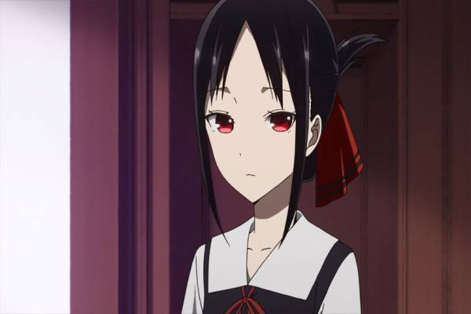

NekoList
Have a claw-esome ex-purr-rrience with us!
Welcome to Nekolist! (=^･ω･^=)/
This a website blog where you can browse for ideas on what
to watch on your next anime show/movie!
Here, you can find lots of possible anime suggestions that
I personally offer to widen your bucket list of must-watch anime!
I will offer lists from best to watch, family-friendly, popular, etc.
I have many anime to list from 1989 to 2022! My recommendation varies from many genres
like romance, action, comedy, slice of life, mystery, fantasy, and so much more!
If you're new, no problem! I will also suggest some of the best anime
for beginners so that you might not feel overwhelmed with the number of choices.

EXCITING STORYPLOT!

AWESOME MUSIC!

LOVABLE CHARACTERS!
Top 6 Most Popular Characters
4 / 6

Kaguya Shinomiya
❮
❯
But what is anime? And how come it's popular?
Anime is unique for its art style and storyline that goes beyond its expectations.
Despite being animated shows, these shows typically cover a wide range of themes, from lighthearted to more mature, making them relatable to all viewers.
Many people, as well as myself, watch anime as a source of entertainment and as well as comfort.
So, whether you're young or old, anime has a lot of genres that all can enjoy so don't worry if you think there's some certain age limit or something.
All are welcome in the anime community!